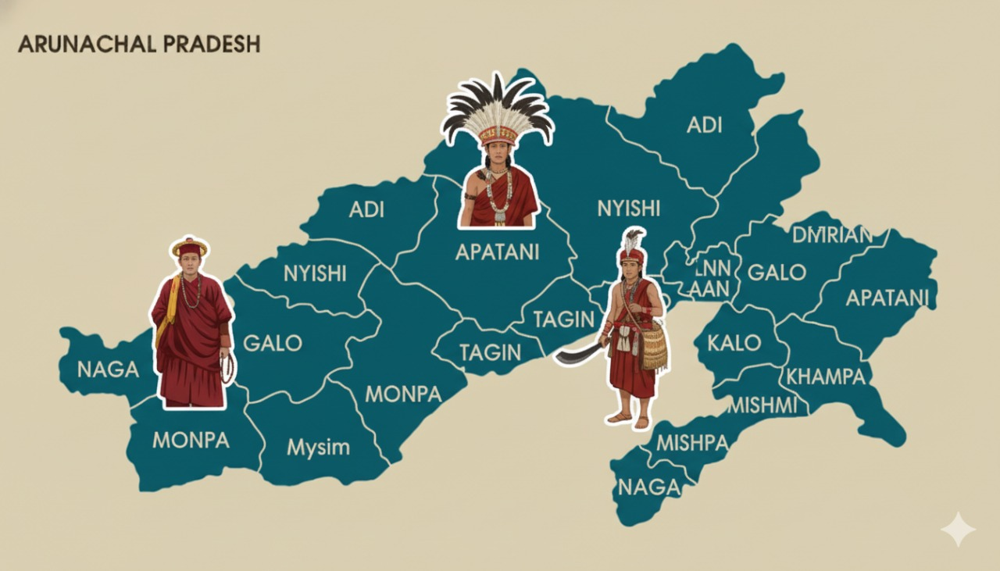

Quick history of Arunachal Pradesh
Arunachal Pradesh — literally "land of the rising sun" — is home to many indigenous tribes with rich cultural traditions and diverse languages. It became a union territory of India after independence and was granted full statehood in 1987. The state features large tracts of forest, high mountain passes (like Sela), and important biodiversity hotspots such as Namdapha National Park.
Because of its steep terrain, intense monsoon rains, and seismic activity being on the Himalayan thrust systems, the state is naturally prone to floods, landslides and frequent low-to-moderate earthquakes.

Capital: Itanagar
Statehood: 1987
Statehood: 1987
Detailed timeline & preparedness tips
- May–June 2025 monsoon crisis — intense rains triggered flash floods across many districts, with landslides reported in East Kameng, Dibang Valley, Anjaw and others. Relief operations and air-drops were used to help cut-off villages.
- Common impacts — damaged roads, washed-away bridges, destroyed crops, temporary sheltering in relief camps, and travel disruption along NH routes (including sections of NH-13 / BCT highway).
- Preparedness tips — keep an emergency bag (food, water, torch, first-aid), register with local disaster authorities, avoid river banks during heavy rain, and follow official evacuation orders.
- How you can help — support verified local relief funds/NGOs, donate through government-endorsed channels, or volunteer through district disaster management teams.